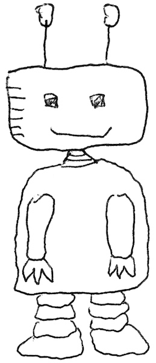

Anselm Rothe
Cognitive Scientist
Profile
I am a PhD student in the Computation & Cognition Lab at New York University, working with Todd Gureckis and Brenden Lake.
Contact
Email: anselm@nyu.edu
6 Washington Place, New York, NY 10003
Department of Psychology
New York University
Research
Machine question asking:
Rothe, A., Lake, B. M., and Gureckis, T. M. (2017). Question asking as program generation. Advances in Neural Information Processing Systems (NIPS) 30. [PDF] [Press: MIT Technology Review]
Human question asking:
Rothe, A., Lake, B. M., and Gureckis, T. M. (2016). Asking and evaluating natural language questions. In Proceedings of the 38th Annual Conference of the Cognitive Science Society. [PDF][Data]
Causality:
Mayrhofer, R., and Rothe, A. (2012). Causal status meets coherence: The explanatory role of causal models in categorization. In Proceedings of the 34th Annual Conference of the Cognitive Science Society. [PDF]
